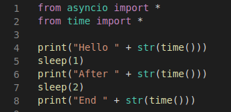
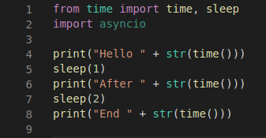
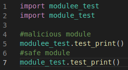
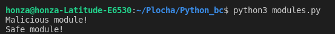
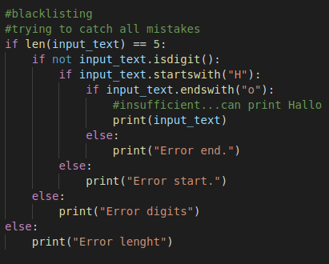
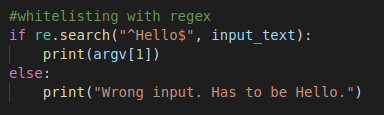
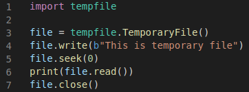
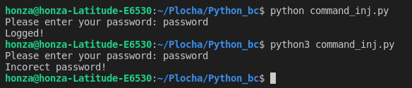
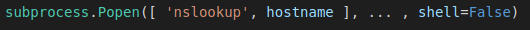

Secure Coding Guidelines for Python
Existing methods and standards
There are several existing standards and methods that can be used as helping hand when developing a software. Some of them are official standards like ISO and NIST and others are community based and open like OWASP. In this chapter is my goal to introduce these standards and explain their importance when developing a secure software.\\ \section{OWASP} The first major project dealing with secure coding is Open Web Application Security Project (OWASP). A community based project founded in 2001 by Mark Curphey. His main goal was to raise awareness about security breaches in applications by identifying some of the most critical risks. It is a non-profit organization based in the USA, but nowadays has already headquarters also in Europe.\\ The main goal of OWASP is to inform developers about the most important security risks in development. For this purpose, OWASP developed several projects, with the most significant one, the OWASP Top 10. The OWASP Top 10 is used as a measurement mainly for web application developers.\\ \begin{figure}[h] \centering \includegraphics[width=10cm]{obrazky-figures/logo.png} \caption{OWASP logo.} \label{fig:logo_owasp} \end{figure} \subsection{OWASP Top 10} The OWASP Top 10 is widely used for web application developers as a guideline of what to be careful of. The Top 10 was first published in 2003, and it contains the most dangerous exploits sort by the percentage of occurrence in applications. The Top 10 is published every four years, with the latest edition published in 2021. In this chapter will be a list of the latest OWASP top ten edition. The order will reflect the original order by OWASP. Details can be found on the official OWASP website~\cite{owasp}. Some of these vulnerabilities will be thoroughly inspected in the guidelines itself.\\ \begin{itemize} \item Broken Access Control \item Cryptographic Failures \item Injection \item Insecure Design \item Security Misconfiguration \item Vulnerable and Outdated Components \item Identification and Authentication Failures \item Software and Data Integrity Failures \item Security Logging and Monitoring Failures \item Server-Side Request Forgery \end{itemize} This list is so important that vulnerabilities that did not make it to the guidelines should be at least introduced here. Following sections are the rest of the OWASP top 10.\\ \subsubsection{Insecure design} Special category dealing with design exploits. In this category, we can fight bad designed GUI and other design flaws. Example here would be bad protection against automatic access (bots).\\ In this category also appears user misuse of web application GUI.[] Cinema chain allows book seats without deposit up to 15 seats. Attacker can book all the seats in the cinema without paying single dollar, causing massive loss of income of cinema. \subsubsection{Security misconfiguration} Web application that through its implementation allows attackers and users to see its vulnerabilities. Application is badly configured or there are missing some security hardening components. The app contains unnecessary features, test data and accounts. Errors are shown to the user with exceptions from code. These are a few examples of misconfiguration.\\ The solution is updating security configuration, deleting test data and default users, better error handling. \subsubsection{Vulnerable and outdated components} It is important to know which component the app (client and server) is using. This vulnerability comes from out of date software and components. Including OS, database, server API, libraries and so on.\\ Checking your dependencies is critical, updating modules and libraries and software is also important.\\ App is using a module, that has outdated secure modules. These modules have some exploits that have been repaired, but app is not updated, so an attacker can try this well-known attack and still succeeds only because of outdated module in application. \subsubsection{Software and data integrity failures} This exploit includes all integrity failures relate to integrity violations. The worst-case scenario are apps with automatic updates of plugins, sources, repositories and so on. What if someone changes the module to malicious module. Then is app also malicious and not safe.\\ Preventing is simple. Using digital signatures to verify the software. Use trusted sources. %mozna dopsat \section{NIST} National Institute of Standards and Technology is a US agency and sciences laboratory. It was formed in 1901 and its mission is rising US industrial competitiveness~\cite{wiki_NIST}. It is divided into several sectors. Sectors are as follows: \begin{itemize} \item Communications Technology Laboratory (CTL) \item Engineering Laboratory (EL) \item Information Technology Laboratory (ITL) \item Center for Neutron Research (NCNR) \item Material Measurement Laboratory (MML) \item Physical Measurement Laboratory (PML) \end{itemize} For our purpose, it is enough to know that each sector is creating standards. \subsection{NIST for cybersecurity} There are many sections where is NIST creating standards. One of these sections is IT, precisely cybersecurity. NIST develops standards, guidelines, best practices and other. NIST cooperates with other agencies such as NICE (National Initiative for Cybersecurity Education). Their goal is to educate the public about cybersecurity and train developers. They are also aiming at cryptography and cybersecurity measurement~\cite{NIST_cyber}.\\ \subsubsection{NIST 800-160} NIST 800-160 is called Systems Security Engineering. The main goal of this paper is to raise awareness about security problems when developing is system. The paper suggests strategies how to accomplish secure system. It is paper for developers and also for management, but it is really comprehensive. It deals with a lot of problems~\cite{NIST_paper}.Basics
There are some important basics that needs to be shown to the programmer. They consist more of a right Python settings than some coding examples. Setting Python right can prevent many possible vulnerabilities.Version of Python
The first basic that programmer needs to have in mind is the right version of Python. Many of the vulnerabilities have been repaired in the newer Python versions. For example in Python version 2.5 exists exploit, where can attacker cause buffer overflow via string in socketmodule.c. Preventing is simple by using the newest stable version of Python. If your company is using Python < 3.0, consider updating Python version and its dependencies. It is not only more secure, it is also offering better user experience. You can check your Python version by typing this into your command line:$python --version
Virtual environment
The safest programming in Python should be in virtual environment. It is recommended to use it, because venv (virtual environment) can assure that Python projects are divided from the folder with Python itself. If project has some malicious modules or other security problems, it is limited only to this project and does not effect other Python projects on this device.Importing modules
There are several methods how to import a module in Python. In particular absolute and relative import and implicit and explicit import. The best way to use import is to use absolute import. Example shows how absolute import looks like.

On the figure there is comparison between wrong importing, where importing time overwrites module asyncio. It is basic example form standard library, but it is important to show some of the basic mistakes. Both of the modules contains function sleep(). In the wrong example there is no prove that we are calling sleep from time or asyncio. In this case it depends on the latest import, which is time. The example below is better example, where from module time is selected only what is needed. The module asyncio is there only for the showing of no overriding.

Typosquatting
The last warning in this topic is typo squatting. Typosquatting is kind of an attack that targets heedless programmers. It works like this: programmer writes an import, but makes a typo. Import is still not underlined as a mistake, why? Programmer has just imported a malicious package. Be careful with packages and check after yourself. There are dozens of malicious packages in PyPI. Example, where programmer typed modulee_test instead of module_test. In this example there is called only print, but it could be for example malicious module with system command.


From usable point of view is best practice to divide imports into three categories. The first category are standard library imports, the second are third party imports and the last one is local imports. Each category is sort in alphabetical order.
Standard Python
In this section I will be dealing with things that are related to the coding itself. They are still basic, but their impact on security is much more significant. I will show some validation techniques and I will compare two main Python validating constructions. Then there will be flaws from the standard library like command injections and path manipulating.Input validation
The right way of validating user input can assure that the program will be very secure. But there are many practices how to check user input. Some of them are better than others. In this section will be shown the right and most secure way of input validating.Blacklisting vs. whitelisting
There are two main ways how to validate input. The first is blacklisting. Blacklisting means marking some inputs as forbidden. The main problem of this technique is that it is practically impossible to catch every wrong input because there are theoretically infinite wrong inputs that user can create therefore it is advisable using whitelisting. Whitelisting is a practice when programmer knows what the right input is and checks only the right input. It is more secure and also usable technique because it costs theoretically less conditions and less lines to create. It seems this statement is wrong, but blacklisting costs theoretically infinite number of lines. The most suitable technique for whitelisting is to create a regular expression for the right input. Regular expression (regex) is a sequence of characters that specifies a search pattern in text. Programmer should use regexes because one right regex can cover all the wrong inputs. There is also online regex tool which can be really helpful. Module re assures regular expressions for Python. Python also contains many built-in functions like isdigit() that can check if the string is digit or not. Finally, some examples on blacklisting, whitelisting and regular expressions. The goal of these examples is to explain the main differences between these techniques and the importance of the good regular expressions. Regexes are sometimes very hard to code right so I recommend using the online tool mentioned above. In this example the input has to be the string "Hello". First example uses blacklisting and the second one uses whitelisting with some regular expression. Which one looks safer? The example is very simple, but it proves the point because using whitelisting there is only one condition and using blacklisting there are four conditions and still it is not sufficient because word "Hallo" can be written on the output.


Try-except vs. if-else
In Python and other languages exist two main constructions for conditions. Try-except and if-else are used for flow and condition control. They work with similar logic, but the benefits from using one or the other can be quite significant. Try-except is ideal when programmer does not know about all possible errors that can occur. With one conditional block programmer can cover many errors. But it is not without a cost. If-else blocks are more efficient and it is recommended using them when we know possible errors. Try-except is faster when there is less possibility of error, but when the possibility declines, the if-else block becomes faster. When programmer is working with files it is recommended to use try-except block, because when some error happens when opening or closing file and try-except block is present none information are lost. Try-except block works with the system itself. In conclusion it is safer to use try-except block when we are not sure about possible errors or when there is small possibility of some error/exception. In the other cases it is recommended to use if-else block.Standard library flaws
Flaws are in every aspect of programming languages. The first area which I would like to mention is standard library. In the standard library there are many modules, classes and functions. Among them are some functions which require caution. There is a possible injection, path changing also we have to be cautious when working with files and logs. There is a lot of topics for this subsection.Temporary files - mktemp()
Sometimes it is necessary to create temporary files when coding a program. In Python exists special module for this problem and it is called tempfile. It is a part of standard library. This module seems secure except one function mktemp(). Function mktemp() has been deprecated since Python 2.3, but it is still in the module. The advise is not to use the function works like this. Function creates link with absolute path to non existent file at that time. Before your program starts working with this path and creates real file, somebody else can steal this path and do whatever he wants with it. More precisely with created file. Instead of mktemp() use mkstemp() which is more secure or you can use function tempfile.TemporaryFile() like in example below.

Pickle module
Python module pickle is used for serializing or de-serializing data from other sources. It can be used for sending or receiving object state. Pickle is converting byte streams to object structure and vise-versa. The vulnerability lies in the byte string, which is not formatted and it is prone to outside code execution. The best solution for this vulnerabilities are:- do not pickle or unpickle data from untrusted sources
- use HMAC or other algorithms for ensuring integrity of data
- use JSON instead of pickle
Command injection (exec, eval, input, os)
These built-in functions are vulnerable against the same problem. Command injection is a problem when attacker can execute code through other function or code. Problem occurs when programmer does not sanitize user's input. These selected functions are the most used ones, so they will be described and given solution. Eval is function which evaluates given expression through Python evaluating rules. It can be used for evaluating number expressions and so on. Return value is value from evaluated expression. Exec is a built-in function for executing Python code. Both of these functions face same problem with user input. Solution for right using of these functions is validating user input and not giving the input right into these functions. The third function is a little bit different. Function input reads user input and puts it into variable. In Python 2.x was possible create exploit like this:

This is fixed now, but for someone using older Python version (not recommended) it could be still a problem. Function input from version 3.0 converts input into the string that is the reason why in Python 3 is the condition false, but in Python 2.x is true because function converted given input as a variable. It means that the condition is for Python 2.x something like var password == var password which is true.
Another functions which are frequently used are from os module. The most dangerous function is os.system() which uses only single string argument that is executed as command. That opens code for vulnerabilities therefore it is not recommended to use this function at all. And if it is necessary, check the argument is valid and be sure that it is really what you want to execute. Recommended function to execute commands is subprocess.function(). But there is also vulnerability if programmer sets argument shell=True. This means that argument can be in one string. Recommended tactic is give argument to function as a list and set shell to false.

Regular expressions
Even if regular expressions are efficient tool when checking user input, they are vulnerable against ReDoS attack. This attack uses algorithmic complexity against program. Complexity of regular expression can be up to 2^m that means some expressions would take with each character exponentially to evaluate. Thus programmer has to be careful when using regexes. There are some regexes that are forbidden due to its evaluation complexity against inputs like aaaaaaaaaaaaaaaaaaaaaaaaaaa!. List of evil regexes can be found here.String formatting
String formatting in Python also has its own problems. They are not problems like in chapter 3 where is memory the main problem, but bad string formatting can cause can cause leak of data. Through str.format() can attacker see internal parts of objects or some sensitive data. The best solution is to check user input using whitelisting or do not have user input at all. Other solutions include using "old" style formatting. That type of formatting is similar to C string formatting and it is relatively secure. Its cons are smaller clarity and longer code. Other solutions are to use f-strings (Python 3.6+) or template stings from standard library.XML
Sometimes it is needed XML input to proper working program. There are several Python modules which can help with XML. Problem is that every XML Python module out there is vulnerable against two types of attacks. The first one is called Billion laughs attack and the second one The Quadratic blowup. The best practise here is using package defusedxml. Defusedxml is created to prevent especially these two attacks.Random
Generating numbers can be more secure than with standard random from standard library. Its algorithm is quite predictable. Use module with secret.random() instead. All the more if programmer is using generator for secret or encrypted needs.Assert
Assert comes very handy in testing, because programmer can assume with this statement that the assertion is true and if it is not Python raise assertion error. But assert should be used only in testing, because having assertion in production code is vulnerability. Assert can be carried out only if Python's variable __debug__ is set to true. Even if the variable is set to true does not mean that in every environment on every device is set to true. Out of this problem can raise problem where interpret skips part of the code or executes part of the code that should not be executed. It can created undefined behavior.Tarfile and zipfile
Tarfile is module for extracting archives. Programmer should avoid using tarfile when extracting from untrusted sources. In the archive could be file with absolute path containing .. or / which can cause problem because functions in tarfile can not handle that. Use module tarsafe instead. The second problem with archive files is so called "zip bomb". This bomb has one goal. Crush the host's system or program by decompressing small file containing amount of data bigger than host's memory. Programmer can defend setting and checking maximum size of decompressed data and maximum number of files. This link shows .zip files having a few kilobytes compressed but after decompression they needs terabytes of free space.Web programming
This part of coding is very popular these days. Most of the world depends on internet and web applications are the best way how to do things on the internet. But every sun creates a shade. Web applications are vulnerable against many types of attacks. Problem with web applications is that they store sensitive data about users, their passwords and so on. This section should introduce the worst web programming vulnerabilities and their solution.OWASP Top 10
This section is focused on OWASP Top 10 for Python. Not every item on the list is suitable for guidelines for Python. Therefore only these selected items will be described.Broken access control
The most common exploit is called Broken access control. This exploit appeared in 318 thousands web apps that were tested. This number shows how many vulnerable applications are there, whilst it is known that this exploit can be very dangerous. The attacker can bypass access control by modifying the HTML page or the URL of the site, or modifying internal application state. This can cause elevation of privilege which is acting as user when not logged or as admin when not logged as admin and so on. Other problems that BAC can cause are metadata manipulation, cookie manipulation or force browsing to authenticated pages as unauthorized user. We can defend effectively only in trusted server-side code or server-less API, where the attacker cannot modify the access control check or metadata.Cryptographic failures
Second-largest exploit is not a root cause, but more of a symptom. The main problem with cryptography is that it use to be broken and data are visible in the transmission. That is why we have to check if we transmit data in right format and encrypted and check what kind of encryption we use. Personal information has to be encrypted due to EU privacy laws (GDPR). The solution is simple. For private data transmission use HTTPS instead of HTTP which is not encrypted. For other types of encrypted communication, such as SMTP, use TLS for encryption. Check if the server is trusted and check for needed certificates. Update encryption methods for methods that are more powerful and secure. If using generated cryptographic keys, be sure that they are meeting requirements. If possible use authenticated encryption, it is better than only encryption. Also if not needed do not store sensitive data. Data that are not stored, can not be stolen.Injection
This category was composed of several types of injection including SQL injection, cross site scripting and others. The most common injection is SQL injection that occurs when a programmer, for example, uses credentials directly from an authentication form to perform a SQL query. This bad practise that can even lead to deletion or leaking of whole user database. Preventing this attack is really simple. Do not trust user input. Validate what user wrote and restrict length of input or characters that can user use. When creating a SQL query, use only user input that has gone through validation. Example: user wrote in the field for password 'or 1=1)\# . This string in SQL query expands the query for or 1=1. This part of string means for example log user if 1=1, which is always true. User just breached the system. The lesson from this example is that a programmer should never use user input unverified.Identification and authentication failures
This category contains every possible way of attack on authentication. The easiest attack to defend from is a brute force attack. It combines random or not random strings that are from database or some other source and tries to authenticate. This type of attack can be defended just by putting number of tries on the form and then trying to send the user a notification on email or something. Another vulnerability is weak password. The form should not accept passwords that do not contain upper-case and lower-case character, number and special character like '*' or '.'. The more complicated password, the lesser the chance of breaching of account. Password has to be transmitted and stored in encrypted form. So as session ID. Weakness is also password recovery that contains safety private questions. This is also not user-friendly, so it is not recommended for using by usability either because users can forget. It is vulnerable against brute force attacks. Sending notification through e-mail is safer.Security logging and monitoring failures
This chapter is kind of hard to understand. It can not be tested at all or very hardly. The problem is that the application should be logging what is doing. Every error, every suspicious activity, change in configuration and so on. The suggestion is that logging is important, and every application should have a log files that are not stored only locally, but on a server as well because logging can save us a lot of troubles when dealing with security problems.Server side request forgery
This can happen when a web application is fetching a remote resource without validation of user supplied URL. This can cause a redirecting to a malicious web or other places even when protected by a firewall, VPN and so on. Server side request forgery is on the rise with new modern web applications that uses user provided URLs. Preventing is again validating user input, disable HTTP redirections and checking consistency of URLs.Others
This guidelines could have had dozens of pages, but only the three most concerning sections were mentioned. Other vulnerabilities can be found here. There are vulnerabilities which have been patched versions ago, but there are also ones that have not been patched. All the info is available on the link mentioned before.- Executing code from comments
- urlib.parse exploits
- ipaddress zero characters in the octets exploit